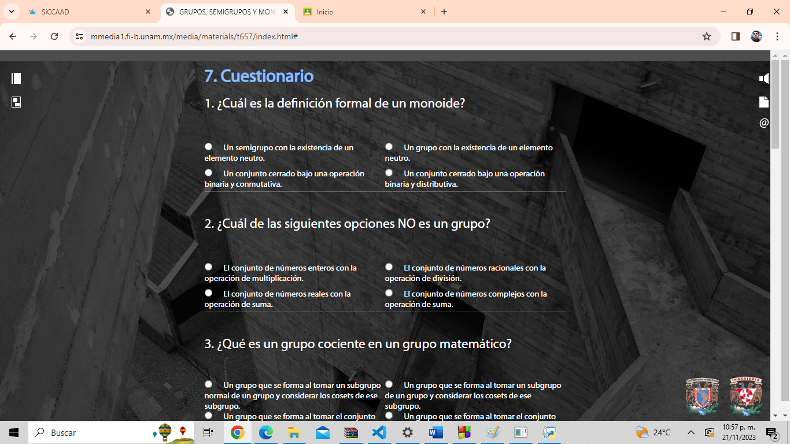

1. Se realizo un sistema de pizzeria en codigo C donde se pueden realizar pedidos con el despliegue de menu y pedidos via remota, la caracteristica principal que destaca al sistema es que se refleja el proceso de preparacion de la pzza con pilas de entrada y salida
2. Se realizo un sistema de compra de autos, se podian encargar auto personalizados, la caracteristica principal del programa es el uso de pilas multiple para meter varios pedidios en los diferentes procesos de contruccion
3.En este sistema en codigo python se pueden realizar varias acciones como donar mascotas, adoptar, comprar alimentos, las caracteristicas que destacatan en el sistema es el manejo de arboles para determanir las sucursales mas sercanas para donar o adoptar, ademas de manejar archivos que se crean y editan para genrar tickets de comprobante
4. Se realizo una pagina web con video, estructura y sistema de operaciones y identificadores con hipervinculos sobre el tema de grupos, semigrupos y monoides para facilitar la investigacion de este tema.
